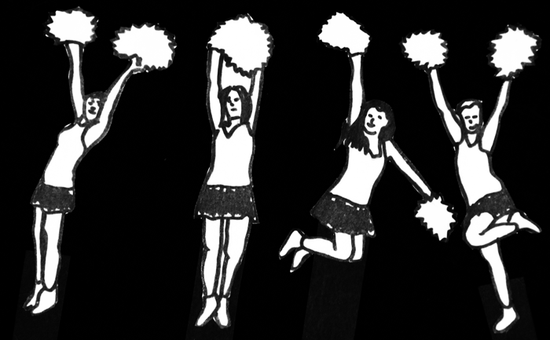
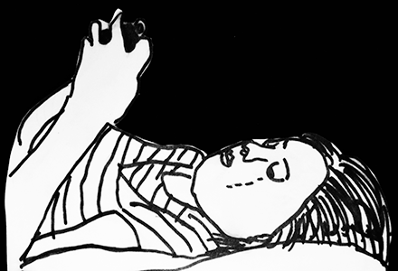

Tips for Getting Support from a Friend

Young people told us that the three main things they want from their friends are:
- Listening and emotional support
- A reality check
- Just doing normal things together
You don't have to be an expert to help

Before you talk to anyone, you need to decide for yourself how much you’re willing to tell. We find it useful to make the following lists:
- * The things you’re okay with most people knowing
- * The things you’re okay with some people knowing
- * The things you want to keep private

But what about professionals?
It's important to understand what professionals are there to give and where a friend’s responsibilities end. We have provided links for ways to get anonymous help and more specific help from services locally at the end.
It may be difficult for you to ask for help from your friends if they haven’t seen you in a while. This could be because you haven’t felt like it, or because somebody else doesn’t want you to.
I've definitely been judged by my actions or for things I had no control over.
Even if you feel like your friends are angry with you, remember that it is not your fault.
Just remember who your real friends are innit 100%
Okay, so now you’ve decided how much you’re going to tell and to ask for support, your friend might want to give you advice. It’s important to remember that the advice can be helpful or unhelpful – and you decide what to do with it.
It's important to remember that everyone finds different things helpful when they are going through a difficult situation. This is okay.
Here’s what young people told us that their friends did, both good and bad.

Calmed me down, told me this wasn’t the end
Allowed me to talk through things or provided me with distractions
Ignored or dismissed an issue, so that I felt unjustified in my anxieties/feelings.
Groups
Maybe you’ve decided you don’t want support from your friends about this. However, you might want to meet other young people who have been through a similar experience.
This is what young people told us that they got out of being part of a group of peers:
- “I felt less isolated”
- “I felt like I could relate to other young people better”
- “I felt less ashamed / more confident”
BEING ALONE (ON PURPOSE)
There may be times where you don't want any support from your friends and you just want to be left alone – that’s okay too and any good friend should understand this.

I like alone time too!
Meeting new people scares me, teenagers can be judgemental!
Coming back
Sometimes you might end up missing school for a long time because of the problem you are experiencing – just know that you are not alone in finding coming back to school really difficult.
You could ask your friends to share their class notes with you or help you catch up with the work you missed.
There are also people who should help make your return to school a little bit easier. Two key people that can help with this are school counsellors and learning mentors.
Being bullied by my whole year group, it just destroyed me and made it very difficult to see a good future for myself.
Working it out
Dealing with difficult situations is a process for everyone involved – for both the person receiving and giving support.
The best support will:
- * Be understanding
- * Be flexible
- * Make your friendship stronger
MOVING FORWARD
When you feel like it’s time to get help from someone else, here's where you can go:
CHILDLINE
Freephone: 0800 1111 (24 hours)
Free, anonymous, confidential and for any issue
SAMARITANS
Tel: 08457 90 90 90 (24 hrs 7 days a week)
Confidential and nonjudgmental for emotional distress
FRANK
Freephone: 0800 77 66 00 (24 hour, free from a landline)
Non-judgmental information about drugs and alcohol, translation for non-English speakers

B-EAT
Tel: 0845 634 7650 (Mon to Fri evenings from 4.30pm to 8.30pm and Saturdays 1.00pm - 4.30pm)
Email: fyp@b-eat.co.uk
Information and support for young people around eating disorders and body image
YOUNG MINDS
Lots of information about young people’s mental health, including self-care, peer support and other places to get help
ABOUT US
This resource was researched, developed and written by CJ Hamilton and Kirsche Walker.
We first trained as Health Advocates on the AYPH Be Healthy project and are now working together to promote young people’s voices in child sexual exploitation services and beyond.
See all that we’ve done and follow us: